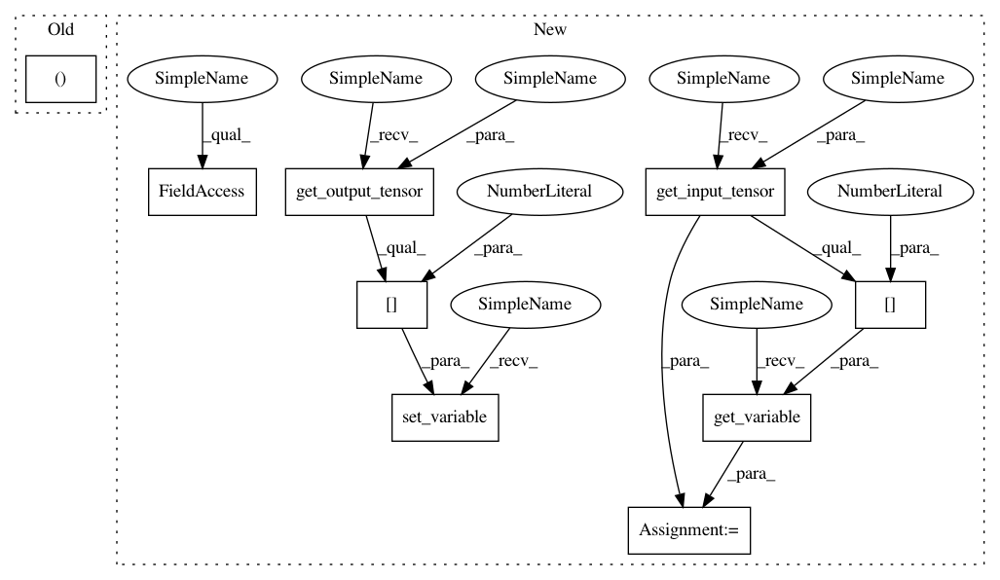

959372edab3020c0164b8a2da4aaff1c49ba8400,src/graph_transpiler/webdnn/frontend/keras.py,,_convert_max_pooling2d,#Any#Any#,394
Before Change
assert len(operator.inputs) == 1
x = operator.inputs[0]
ksize: Tuple[int, int] = tuple(operator.specific_config["pool_size"])
stride: Tuple[int, int] = tuple(operator.specific_config["strides"])
padding_keras: str = operator.specific_config["padding"] // valid or same
if padding_keras == "valid":
After Change
@KerasConverter.register_handler("AveragePooling2D")
def _convert_max_pooling2d(converter: KerasConverter, k_op: keras.layers.AveragePooling2D):
x = converter.get_variable(converter.get_input_tensor(k_op)[0])
if k_op.data_format == "channels_first":
assert x.order == OrderNCHW
elif k_op.data_format == "channels_last":
assert x.order == OrderNHWC
else:
raise ValueError(f"[KerasConverter] Unknown data format: {k_op.data_format}")
ksize = tuple(k_op.pool_size)
stride = tuple(k_op.strides)
if k_op.padding == "valid":
padding = (0, 0)
elif k_op.padding == "same":
padding = (ksize[0] // 2, ksize[1] // 2)
else:
raise ValueError(f"[KerasConverter] Unknown padding: {k_op.padding}")
y, = AveragePooling2D(None, ksize=ksize, stride=stride, padding=padding)(x)
converter.set_variable(converter.get_output_tensor(k_op)[0], y)
@KerasConverter.register_handler("GlobalAveragePooling2D")
def convert_layer_global_average_pooling2d(converter: KerasConverter, k_op: keras.layers.GlobalAveragePooling2D):
In pattern: SUPERPATTERN
Frequency: 3
Non-data size: 9
Instances
Project Name: mil-tokyo/webdnn
Commit Name: 959372edab3020c0164b8a2da4aaff1c49ba8400
Time: 2017-07-02
Author: y.kikura@gmail.com
File Name: src/graph_transpiler/webdnn/frontend/keras.py
Class Name:
Method Name: _convert_max_pooling2d
Project Name: mil-tokyo/webdnn
Commit Name: 959372edab3020c0164b8a2da4aaff1c49ba8400
Time: 2017-07-02
Author: y.kikura@gmail.com
File Name: src/graph_transpiler/webdnn/frontend/keras.py
Class Name:
Method Name: _convert_max_pooling2d
Project Name: mil-tokyo/webdnn
Commit Name: 959372edab3020c0164b8a2da4aaff1c49ba8400
Time: 2017-07-02
Author: y.kikura@gmail.com
File Name: src/graph_transpiler/webdnn/frontend/keras.py
Class Name:
Method Name: convert_layer_global_average_pooling2d
Project Name: mil-tokyo/webdnn
Commit Name: 959372edab3020c0164b8a2da4aaff1c49ba8400
Time: 2017-07-02
Author: y.kikura@gmail.com
File Name: src/graph_transpiler/webdnn/frontend/keras.py
Class Name:
Method Name: _convert_zero_padding2d